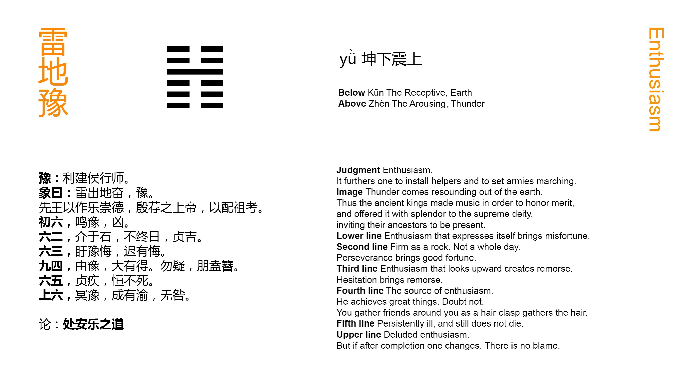

Chinese: 豫 ䷏ yǜ

Yǜ ䷏ indicates that, (in the state which it implies), feudal princes may be set up, and the hosts put in motion, with advantage.
1. The first SIX, divided, shows its subject proclaiming his pleasure and satisfaction. There will be evil.
䷏ changing to ䷲
Matching Line 1 in Adjacent Hexagram: ䷎
2. The second SIX, divided, shows one who is firm as a rock. (He sees a thing) without waiting till it has come to pass; with his firm correctness there will be good fortune.
䷏ changing to ䷧
Matching Line 2 in Adjacent Hexagram: ䷎
3. The third SIX, divided, shows one looking up (for favours), while he indulges the feeling of pleasure and satisfaction. If he would understand! -- If he be late in doing so, there will indeed be occasion for repentance.
䷏ changing to ䷽
Matching Line 3 in Adjacent Hexagram: ䷎
4. The fourth NINE, undivided, shows him from whom the harmony and satisfaction come. Great is the success which he obtains. Let him not allow suspicions to enter his mind, and thus friends will gather around him.
䷏ changing to ䷁
Matching Line 4 in Adjacent Hexagram: ䷎
5. The fifth six, divided, shows one with a chronic complaint, but who lives on without dying.
䷏ changing to ䷬
Matching Line 5 in Adjacent Hexagram: ䷎
6. The topmost six, divided, shows its subject with darkened mind devoted to the pleasure and satisfaction (of the time); but if he change his course even when (it may be considered as) completed, there will be no error.
䷏ changing to ䷢
Matching Line 6 in Adjacent Hexagram: ䷎
The Yǜ ䷏ hexagram denoted to king Win a condition of harmony and happy contentment throughout the kingdom, when the people rejoiced in and readily obeyed their sovereign. At such a time his appointments and any military undertakings would be hailed and supported. The fourth line, undivided, is the lord of the figure, and being close to the fifth or place of dignity, is to be looked on as the minister or chief officer of the ruler. The ruler gives to him his confidence; and all represented by the other lines yield their obedience.
Line 1 is weak, and has for its correlate the strong 4. Its subject may well enjoy the happiness of the time. But he cannot contain himself, and proclaims, or boasts of, his satisfaction; -- which is evil.
Line 2, though weak, is in its correct position, the centre, moreover, of the lower trigram. Quietly and firmly its subject is able to abide in his place, and exercise a far-seeing discrimination. All is indicative of good fortune.
Line 3 is weak, and in an odd place. Immediately below line 4, its subject keeps looking up to the lord of the figure, and depends on him, thinking of doing nothing, but how to enjoy himself. The consequence will be as described, unless he speedily change.
The strong subject of line 4 is the agent to whom the happy condition is owing; and it is only necessary to caution him to maintain his confidence in himself and his purpose, and his adherents and success will continue.
Line 5 is in the ruler's place; but it is weak, and he is in danger of being carried away by the lust of pleasure. Moreover, proximity to the powerful minister represented by 4 is a source of danger. p. 93 Hence he is represented as suffering from a chronic complaint, but nevertheless he does not die. See Appendix II on the line.
Line 6, at the very top or end of the hexagram, is weak, and its subject is all but lost. Still even for him there is a chance of safety, if he will but change.